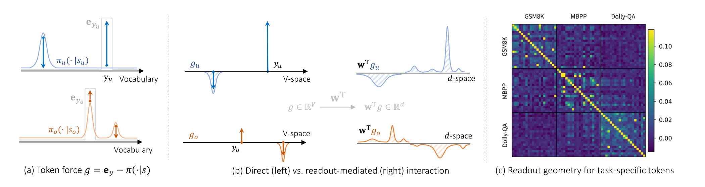
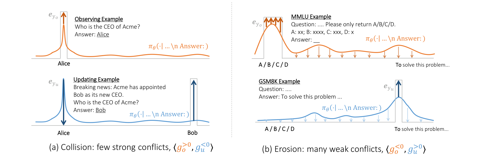
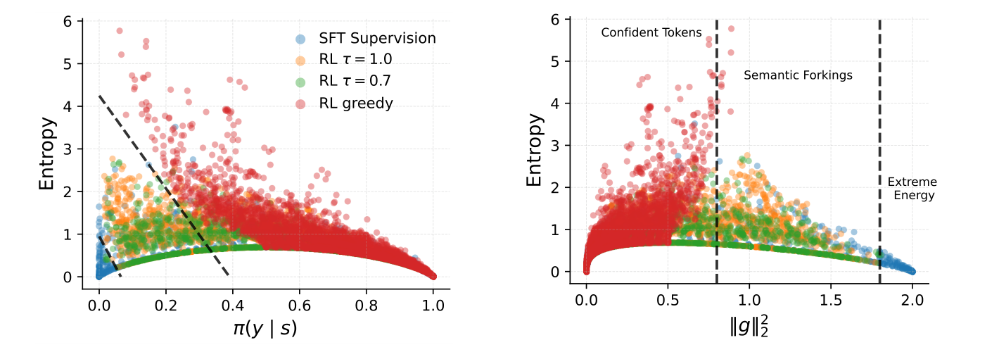
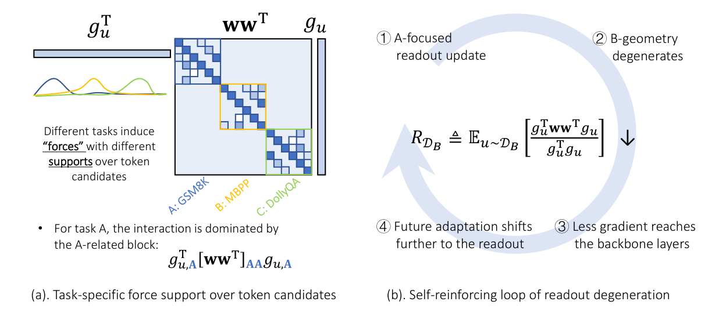
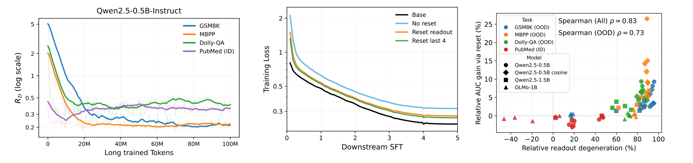

Every time a model learns something new, it changes something else. Which changes are useful, which cause forgetting, and when do repeated updates make future learning harder? We study these questions through one simple local interaction: how does learning from one token change the model's behavior on another?
Rather than treating the interaction as a black-box score, we decompose it into interpretable components that reveal why an update helps, interferes with existing behavior, or weakens future learning. The same local interaction therefore describes what to learn from, what an update may break, and whether the model will remain easy to adapt later.
What should the model learn from?
Positive interactions identify useful updates.
What does an update break?
Negative interactions reveal collision and erosion.
Will future learning still work?
Repeated updates can weaken future learnability.
One interaction, two channels, three closely related tasks
Learning from an updating token u changes the model's confidence in an observing token o by an amount Δt(o,u). A first-order expansion turns this into a gradient inner product; separating the softmax force, the shared readout matrix w, and the residual backbone exposes two distinct, forward-pass only channels:
CH2 (2nd term) — diffuse: interaction mediated by the shared readout w, coupling tokens beyond direct overlap.
CORE INSIGHTS
Energy ‖gu‖22: update strength, revealing collision-prone updates.
Collision / erosion: few strong conflicts vs. accumulated weak interference.
Shared geometry ww⊤: couples token forces and controls backbone transmission.
Readout transmission: tracks how repeated learning changes future learnability.

Selection: direct overlap first, shared geometry when needed
Data attribution is the positive regime of the same interaction: examples with stronger positive Δt(o,u) are more useful candidates for learning. Our approximation scores this interaction using forward-pass quantities only.
CH1 is already strong when direct token alignment is available; CH2 becomes useful when that alignment weakens. On a controlled math-attribution benchmark, CH1, equivalent to our earlier For-Value score, already saturates AUC and recall while requiring no backward pass. We then stress-test direct alignment by translating the same queries across languages. Semantic relevance is preserved, but surface-level token alignment is weakened. Here, CH1 begins to degrade, while adding the readout-mediated CH2 substantially improves attribution.
| Method | Math AUC | Math Recall | X-lingual MMLU | X-lingual GSM8K | Backward? | Complexity |
|---|---|---|---|---|---|---|
| Random | 0.50 | 0.10 | 0.025 | 0.020 | – | O(n) |
| Embd | 0.56 | 0.15 | 0.475 | 0.370 | no | O(nd) |
| DataInf | 0.99 | 0.88 | 0.313 | 0.175 | yes | O(ndinL) |
| HyperINF | 0.99 | 0.94 | 0.606 | 0.645 | yes | O(nd3L) |
| LESS | 0.84 | 0.59 | 0.319 | 0.355 | yes | O(ndproj) |
| For-Value (CH1) | 1.00 | 1.00 | 0.506 | 0.830 | no | O(nd) |
| CH1 + CH2 | 1.00 | 1.00 | 0.625 | 0.930 | no | O(ndL) |
Left two columns: retrieving same-class math examples, Qwen2.5-1.5B (Table 1). Right two columns: cross-lingual attribution accuracy on Llama-3.2-3B, tracing a translated candidate back to its English source (Table 2; other models show the same pattern). CH1 nearly saturates attribution when direct token alignment is strong. CH2 provides complementary signal as that alignment weakens, rather than acting as a universal upgrade.
Does this help with real retrieval? In a multilingual agent-memory setting, using CH1+CH2 improves Llama-3.2-3B's top-1 retrieval accuracy from 0.861 (CH1 alone) to 1.000. More importantly, downstream answer accuracy rises from 0% to 94.4% once the retrieved memory is used.
Does better attribution translate into better training data? As a closed-loop check, we select the top 5% of GSM8K examples using CH1+CH2 and fine-tune on the resulting subset. This reaches 0.636 accuracy on Qwen2.5-1.5B and 0.313 on Llama-3.2-3B, compared with 0.610 / 0.295 for random selection and 0.587 / 0.301 for gradient-based LESS. Candidate scoring requires only forward-pass quantities.
Two mechanisms of forgetting: collision and erosion
Collision: a few strong conflicts, often visible in accuracy.
Erosion: many weak interactions that accumulate into behavioral drift, often missed by accuracy.

Collision — a few updates hit hard. A strongly opposing update can directly push down an existing high-confidence behavior. This risk is especially relevant for objectives with explicit negative-gradient components, such as unlearning, DPO, and GRPO, where some responses are intentionally suppressed. In these settings, the squeezing effect from our previous work may also become relevant: strong negative updates, especially on already-unlikely outputs, can redistribute probability mass in unintuitive ways.
The link between collision and energy is visible in real training data — and on-policy rollouts show a strikingly different pattern from off-policy SFT targets.

The intervention follows directly: masking updates with too big Eu substantially improves retention of general capability during SFT. Push the threshold too aggressively, though, and downstream learning starts to suffer — this targets specific high-risk updates, not training volume in general.
This isn't just theoretical — several popular methods already do it. A number of finetuning objectives known to be more stable than plain off-policy SFT turn out to suppress extreme energy as a side effect of their design: GKD replaces the one-hot target with a softer teacher distribution, OPD samples on-policy so extreme-energy tokens are rarely even visited, and label smoothing caps how large the energy can get in the first place. Heuristic methods like EAFT go after the same quantity directly, by downweighting exactly the low-entropy conflicting tokens Prop. 5.1 flags. We work through the derivation for each in Appendix D.1 — the short version is below.
| Objective | Update force | Risk of extreme energy |
|---|---|---|
| SFT | eyu − π | possible |
| RL (on-policy) | eyu − π | uncommon |
| GKD | πteacher − π | suppressed |
| OPD | Au(eyu − π) | suppressed by sampling |
| Label smoothing | (1−ε)eyu + εu − π | bounded by ε |
Simplified from Table 8 (Appendix D.1). π abbreviates πθ(·|su); eyu is the one-hot target; u is the uniform distribution; Au is OPD's log-ratio weight.
Erosion — weak interactions accumulate. MMLU's likelihood-based accuracy only checks which of A/B/C/D scores highest; it says little about whether the model still behaves like a multiple-choice assistant when generating. That gap is where erosion hides: many individually mild updates can gradually shift the model's response style while measured accuracy barely moves.
| Method | Non-IF | Boxed | P(A...D) | MMLU |
|---|---|---|---|---|
| base | 11.4% | 0.0% | 0.981 | 70.67% |
| SFT | 63.7% | 53.3% | 0.399 | 69.94% |
| EAFT | 60.7% | 44.7% | 0.418 | 70.03% |
| Mask Eu>1.8 | 65.4% | 46.6% | 0.385 | 69.69% |
| Mask Eu>1.5 | 55.1% | 40.8% | 0.444 | 69.72% |
| Mask Eu>1.0 | 51.5% | 11.9% | 0.521 | 69.18% |
Qwen3-4B-Instruct after OpenMathInstruct-2 fine-tuning. Non-IF, Boxed, and P(A...D) are from the generative MMLU evaluation (Table 11); MMLU is the standard likelihood-based multiple-choice accuracy (Table 9). Non-IF: doesn't answer with a letter at all. Boxed: adopts the training corpus's \boxed{} convention. P(A...D): probability mass on a valid choice.
Energy-based defenses do not resolve erosion. Even the most aggressive energy masking leaves 51.5% of responses non-compliant, compared with 11.4% at base, while likelihood-based MMLU accuracy barely changes. This is consistent with erosion being distributed across many ordinary-looking updates rather than concentrated in the high-energy tail.
The fix isn't less learning — it's a different template. If erosion accumulates because many updates share a response format with the protected behavior, the fix isn't to shrink those updates — it's to change the format, which changes the interaction paths they accumulate through. The semantic task content, and how well the new task is learned, stay basically untouched.
| Training format | Protected behavior (ΔIF) | New-task learning (ΔAcc) |
|---|---|---|
| Matching format | −86.7 pts | +44.8 pts |
| Separated format | −0.01 pts | +45.3 pts |
Qwen3-4B, MMLU protected under Question:/Answer:, GSM8K learned under Problem:/Result: (Table 7). "Matching format" evaluates the protected behavior in the incoming task's format; "Separated format" evaluates it in its own.
Why this matters. Collision is concentrated: a few high-energy updates carry much of the risk, so filtering them helps. Erosion is distributed: many individually mild updates accumulate through aligned interaction paths, so magnitude filtering is insufficient. Changing those paths can substantially reduce erosion without reducing learning.
Learning today reshapes how easily the model learns tomorrow
Continual learning is ultimately a lifelong process: the model keeps updating, repeatedly moves across tasks, and is expected to remain adaptable throughout. This raises a fundamental question: after learning for a long time, can the model still learn efficiently from the next task? This failure mode is commonly studied as plasticity loss , and large language models are not immune to it.
Our interaction framework suggests a different way to look at plasticity loss: as a signal-transmission problem. If we view the token force g as an incoming learning signal, then wTg is the signal after it passes through the shared readout geometry on its way into the backbone. From this perspective, plasticity should not be identified with the raw strength of the force itself. What matters is the gain: how much of that signal is transmitted relative to how strong the original signal was.
This naturally suggests normalizing out the input magnitude. Borrowing the classical Rayleigh-quotient view of directional gain, we measure the task-conditioned readout transmission as
The normalization separates signal gain from signal strength: a task can still produce large output-level errors while becoming progressively worse at transmitting them into the backbone. This lets us study plasticity as a task-conditioned change in transmission geometry, rather than simply a change in gradient magnitude.
Why this can compound. The Rayleigh quotient also suggests a simple mechanism for how plasticity can deteriorate over time. Different tasks place their token forces in different directions of the shared readout geometry. Training on one task therefore does not reshape ww⊤ uniformly: it preferentially strengthens and reorganizes the directions used by that task, while transmission along other task directions can weaken.
This can create a self-reinforcing loop. If the readout transmission for a future task drops, less of that task's learning signal reaches the backbone. Subsequent adaptation then relies relatively more on the readout itself, potentially reshaping the same geometry further. In this view, plasticity loss is not simply a weaker gradient: it can emerge from the progressive reallocation of signal gain across task directions.

If this picture is right, future-task transmission should decline as adaptation becomes harder. Over long-horizon training, RD falls along held-out task directions while the in-distribution probe stays stable. This suggests a task-conditioned loss of transmission rather than a generic collapse. More strongly, if the readout is part of the bottleneck, restoring it should recover plasticity, and settings with greater degeneration should recover more.

The readout is an important, but not exclusive, source of plasticity loss. Resetting it recovers a substantial fraction of lost adaptability, but not all of it; resetting the last four blocks provides a modest additional gain. The bottleneck is therefore real, measurable, and partially reversible.
A single token-level interaction gives us a common language for selection, forgetting, and plasticity. By decomposing it into direct force alignment and readout-mediated transmission, we can ask not only what changes after an update, but also why: which examples are useful, how interference accumulates, and when future learning signals begin to weaken.
This work builds on our ICLR 2025 learning-dynamics framework. The earlier formulation described fine-tuning through a sequence-level, Jacobian-dependent kernel. Here we turn that view into a token-wise, layer-wise, forward-computable decomposition that can be evaluated throughout training, making the framework practical not only for predicting learning dynamics, but also for analyzing their underlying mechanisms. From our previous paper, you may remember the AKG decomposition and the squeezing effect. From this one, we hope you remember four things: CH1 + CH2, update energy, collision vs. erosion, and the Rayleigh quotient for readout transmission.
BibTeX
@misc{ren2026learningdynamicscl,
title = {Learning Dynamics of Continual Learning: A Unified View of Data Attribution, Forgetting, and Plasticity Loss},
author = {Ren, Yi and Deng, Wenlong and Hong, Guanzhe and CL and Gal, Yarin},
year = {2026},
note = {Preprint.},
url = {TODO: arXiv URL (posting 2026-09-15)}
}